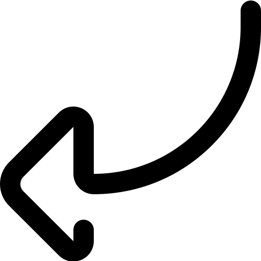
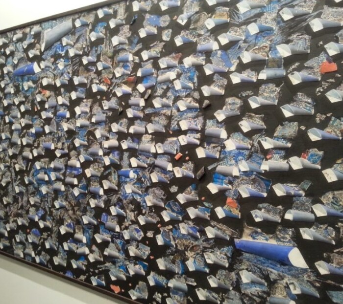

Музей Доганчай


Balo sok 42 Beyoglu, Стамбул 34335 Турция
В Стамбуле в 2004 году был торжественно открыт для гостей музейный частный комплекс Доганчай (своим названием он обязан основателю Бурхану Доганчаю
Стамбульский художник является одним из редких мастеров, работающих в процессе создания полотен в технике фьюмажа
В экспозициях музея представлены не только работы кисти самого Бурхана, но и творения его отца Адила Доганчая